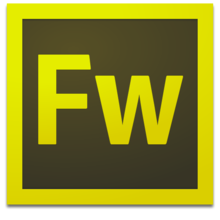

|  | O Fireworks é um editor de imagens de bitmap e desenho vetorial desenvolvido pela Macromedia, posteriormente adquirido pela Adobe.
Suas funcionalidades focam a publicação gráfica na Internet, por isso inclui suporte a GIF animado, PNG e imagens fatiadas, além de possuir
ótima compressão de imagens. A partir da versão MX, ganhou integração com outros produtos da mesma linha, Dreamweaver, Flash e Freehand.
O Fireworks permite que Web designers criem gráficos para suas páginas da Web de maneira simples e eficaz, sem que eles precisem lidar com montes de códigos ou se percam em meio a várias paletas de cores. Com a aquisição da Macromedia em 2005 pela Adobe, houve um choque entre os seus programas, Fireworks e ImageReady, Dreamweaver e GoLive, Freehand e Illustrator. Assim, o objetivo da Adobe foi em criar um conjunto mais poderoso de soluções para a criação, gerenciamento e entrega de conteúdo e experiências atraentes em múltiplos sistemas operacionais, dispositivos e mídias. O desenvolvimento do ImageReady foi cancelado prevalecendo o Fireworks como editor gráfico para Internet. |
| Ficha Geral | |
| Desenvolvedor | Macromedia, Adobe |
| Lançamento | 1998 |
| Versão estável | CS6 |
| Linguagem | C++ |
| Sistema Operacional | Windows, Mac OS X |
| Gênero | Edição de imagens |
| Licença | Proprietária |
| Página oficial | Clique para ser direcionado |